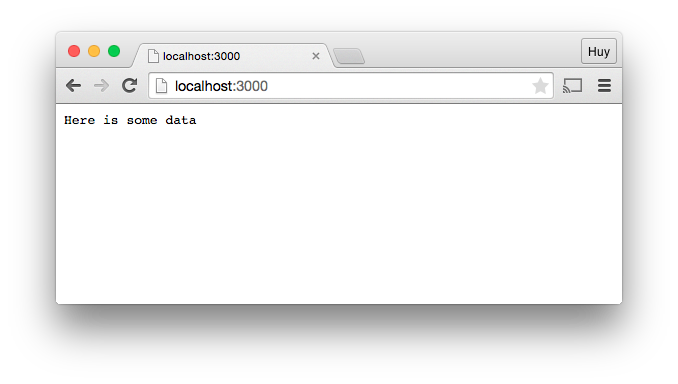

Once upon a time, in the far far away land of world wide web, JavaScript handles all of the front-end processes on the client-side. All of the heavy processing is handled in the back-end by PHP. Live is good. One day, JavaScript discovered Node.JS, a master in server-side processing. Together with Node.JS, JavaScript has slowly but surely overtaken PHP as the dominance force to rule the world wide web world on both client and server sides.
Okay, great, so Node.JS can run JavaScript on the server side but why should I care?
Like PHP, Node.JS is also an open source initive. It is using the latest Google's JavaScript engine, V8. This makes Node.JS super fast.
In addition,as JavaScript becomes one of the most popular languages on the web, there are large communities supporting and developing new functionalities for Node.JS framework.
Still not convince? Node.JS has built-in libraries that handle HTTP, SSL, filesystem, compression, JSON, etc. Those advantages make it a great tool to create APIs, running real-time applications, etc.
Alright, so, Node.JS sounds great but where is it used?
Node.JS is one of the most popular and fastest growing JavaScript framework in the world. It is being used by a lot of small as well as large Fortunes 500 companies including:
Since Node.JS is single thread, it is not ideal for long running operation such as complex calculation. In addition, while Node.JS excels in handling JSON, the defacto for NoSQL databases, PHP is still a better tool to handle relational databases such as MySQL. Therefore, depends on situation and requirements, Node.JS may or may not be the best solution for everything.
Well, that sounds terrific. Now, how do I start? Glad you asked; here are the steps:
Well, great! I think I have Node.JS installed but how do I know for sure?
Writing your favorite program, "Hello World", of course. In your favorite editor, type the following code: Now, on the command line, type:
Now, on the command line, type:
 Voila!! You have successfully installed and written your first Node.JS program!
Voila!! You have successfully installed and written your first Node.JS program!
Writing "Hello World" is cool and all but what about running Node.JS on the server?
Aha! Using Node.JS as your back-end server is extremly simple. Unlike PHP, you don't need to have Apache installed in order to set up your server. Here is a simple example of setting up a server using Node.JS:
In your favorite editor, type the following code: Run the new script using Node.JS: Now, in your web browser, make a request to localhost at port 3000:  With a just a few lines of code, Node.JS is able to act as a server to get request and send back response to the user. This demonstrates the power as well as simplicity of Node.JS.So, I get it, Node.JS is cool and powerful but what else can it do?
As mentioned earlier, Node.JS has a lot of supports and developments from communities. Express.JS is an example of what coming out of that effort.
Express.JS is a web application framework that is built based on Node.JS. Express.JS simplies development and makes it easier to build web services and applications. It is one of the most popular framework for Node.JS.
Sounds good! Now, how do I start on Express.JS and is there any example of using Express.JS?
There are many ways to install Express.JS and one of them is install it temporary: Once, you have it installed, type in the following example code to test it out: Now, in your web browser, make a request to localhost at port 3000:Voila! You have just discovered another way to running the server using Express.JS.
Where I can find more information about Express.JS? At ExpressJS.com, of course.
Alright, everything that I have seen so far is pretty neat. But what about JSON, the de facto standard for transferring data, how does Node.JS handle it?
Aha! As Node.JS is JavaScript based, JSON couldn't have been easier using Node.JS. Here is an example:
Let's say that you have this JSON file:
To use it, you need to add the file directory in your program. Here's the previous Express.JS example with the JSON file directory added along with the updated message display:
And here's the result:
As you can see, Node.JS is made for JSON.
As the late Steve Jobs had always said 'One more thing -' during his presentation, what other (one more) thing that Node.JS has to offer?
Because Node.JS has great communities to oversee its expansion as well as libraries and packages developments, there are many great add-ons to Node.JS. Some of the most popular packages are:
Alright! So, I think I have enough information to start with Node.JS but where do I go if I have additional questions?
nodejs.org would be the autoritative source for all of the documentation and references related to Node.JS. Other than that, your favorite search engine would be able to point you to the right direction with any questions that you might have.
Microsoft, Yahoo, Dow Jones, ebay, The New York Times and LinkedIn are registered trademarks of Microsoft Corporation, Yahoo Corporation, News Corp, eBay Corporation, The New York Times Company and LinkedIn Corporation, respectively.
Some of the sample code to set up the web server using Express.JS was copied from ExpressJS.com Getting started tutorial.